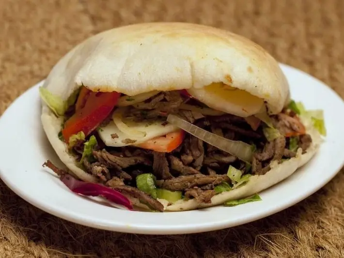

Фото: Vera Yu and David Li, CC BY 2.0

Шаурма домашняя в лаваше
Курица со специями, свежие овощи и чесночный соус в тонком лаваше
40 мин4 порц.612 ккал на порциюБ 41 · Ж 22 · У 61Средиземноморская кухня
Продукты на 4 порц.
- Куриное филе500 г
- Лаваш тонкий4 шт
- Капуста белокочанная200 г
- Помидоры2 шт
- Огурцы2 шт
- Сметана 20%4 ст. л.
- Майонез2 ст. л.
- Чеснок2 зуб.
- Карри (приправа)1 ч. л.
- Паприка1 ч. л.
- Растительное масло1,5 ст. л.
- Соль1 ч. л.
- Перец чёрный молотый1 щеп.
Как готовить
- Курицу нарежьте тонкими полосками, смешайте с карри, паприкой, солью и перцем. Оставьте на 10 минут.
- Для соуса смешайте сметану, майонез и чеснок, пропущенный через пресс.
- Капусту тонко нашинкуйте и слегка помните руками с щепоткой соли. Помидоры и огурцы нарежьте тонкими полосками.
- Обжарьте курицу на масле на сильном огне 6-8 минут до румяных краёв.
- На лаваш нанесите соус, ближе к краю выложите капусту, курицу, огурцы и помидоры, полейте ещё соусом.
- Подверните боковые края и плотно сверните рулетом.
- Обжарьте шаурму на сухой сковороде на среднем огне по 1-2 минуты с каждой стороны до хрустящей корочки.
Совет. Мясо с бёдер без кожи даёт более сочную шаурму, чем грудка. Не кладите много соуса, иначе лаваш размокнет и порвётся.